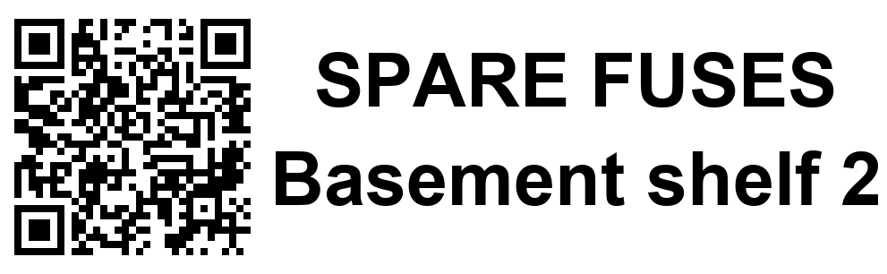

QL Label Print
Print on a Brother QL wide-format label printer from the command line or a small Windows app. No P-touch Editor, no printer driver, nothing to click when a script wants a label.
Unofficial. Not made, endorsed or supported by Brother. See the disclaimer.

What it does
Command line
labelprint.py text "SPARE FUSES" renders, fits and prints. Images work too.
Desktop window
Type, see the exact label, click Print. Desktop shortcut and Ctrl+Alt+L hotkey.
QR code, dated
Optional QR code of the label's words, plus the print date hidden in the code. Scan any label and you know when it was made.
Checks the roll first
Asks the printer what's loaded and refuses a wrong-size job before it jams the printer into a red error.
Any connection
Network, Bluetooth (no pairing), USB, or a Windows print queue.
Works with
Built and tested on a QL-1110NWB on Windows 10. Uses brother-ql-next, which supports the QL-1100, QL-1110NWB and QL-1115NWB. The original brother_ql package stops at the QL-1060N.
Heads up: there is no "QL-1100NWB", even though some listings use that name. The QL-1100 is USB-only; the QL-1110NWB adds Ethernet, Wi-Fi and Bluetooth.
Quick start
python -m venv .venv
.venv\Scripts\python.exe -m pip install brother-ql-next pillow pyserial pyusb segno
copy config.example.json config.json
notepad config.json
.venv\Scripts\python.exe labelprint.py status
.venv\Scripts\python.exe labelprint.py text "SPARE FUSES\nBasement shelf 2"Things learned the hard way
- Port 9100 prints but never answers a status request. Print over the network, ask for status over Bluetooth.
- Windows Bluetooth pairing kept timing out. A raw RFCOMM connection works without pairing at all.
- A wrong-size job leaves the power light blinking red. Open and close the roll cover to clear it.
- "Sent 11500 bytes" means the bytes left your computer, not that a label came out.
Details are in the README. Found something else? Open an issue.
Disclaimer
This is an independent project. It is not affiliated with, endorsed by or supported by Brother Industries, Ltd. or any of its subsidiaries. Brother, P-touch, QL and DK are trademarks of Brother Industries, Ltd. and are used here only to describe which printers this works with. For official software, drivers and support, visit Brother support.
The printer protocol code comes from brother-ql-next, a fork of Philipp Klaus's brother_ql, used under the GPL-3.0. No Brother software, firmware or documentation is included. This project is released under the GPL-3.0 too.
No warranty. It sends raw commands to hardware; use it at your own risk.